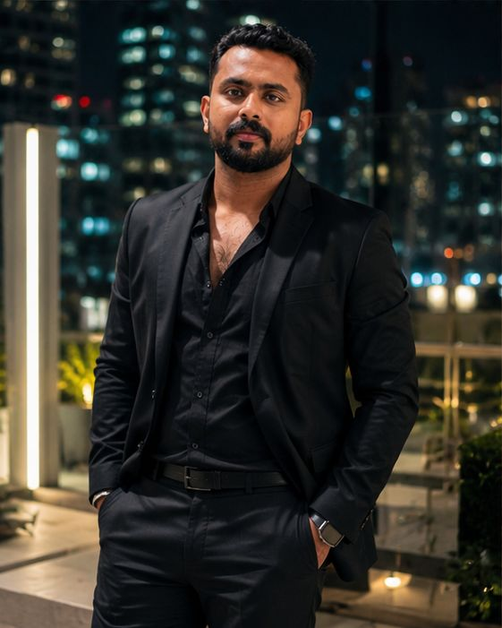
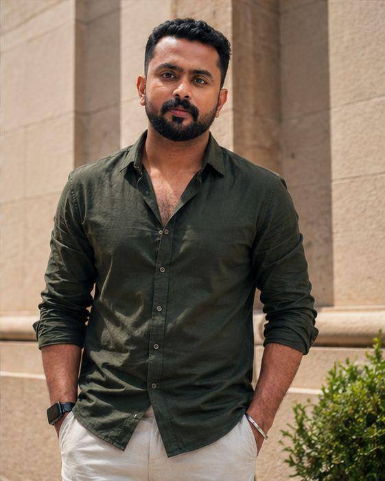
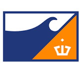
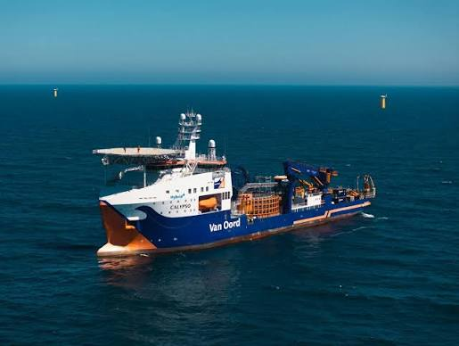

Experienced Marine Engineering Professional with 9.5+ Years of Experience in Marine Technical Operations, Vessel Maintenance, Dry Dock Support, Radiation Safety, QA/QC Inspection and QHSE Compliance.


Experienced Marine Engineering and Technical Superintendent professional with 9.5+ years of experience in marine technical operations, vessel maintenance coordination, dry dock support, radiation safety compliance and offshore marine support operations.
Skilled in dry dock coordination, vessel maintenance planning, contractor supervision, QA/QC inspections, radiation safety management, FANR compliance, incident management and project mobilization support.
Years Experience
Marine Industry
Radiation Safety
Safety Focused
A comprehensive blend of technical expertise, safety leadership, and operational excellence driving reliability, compliance and efficient marine operations.
A journey of growth, learning and delivering excellence in marine technical operations, safety and compliance.
Leading technical operations, vessel maintenance, dry dock activities, QHSE compliance and radiation safety across dredgers, barges and offshore vessels.
Ras Al Khaimah, UAE
Managed vessel maintenance operations, QHSE activities, radiation safety programs and project mobilization support.
Ras Al Khaimah, UAE
Managed radiation safety compliance, leak surveys, inspections and QA/QC operations under FANR regulations.
Sharjah, UAE
Gained hands-on experience in mechanical operations and maintenance within plant systems.
Kerala, India

Van Oord – UAE
Marine & Dredging
UAE
Technical Superintendency & Radiation Safety
Operational Excellence, Safety & Compliance
Excellence
Compliance
& Inspections
& Coordination
Asset Management
Professional certifications and training programs completed to enhance expertise in safety, compliance and technical operations.
Workshops, symposiums and awareness programs attended to stay aligned with industry standards.
Attended workshops conducted by Bureau Veritas (BV) on Marine Classification, Regulatory Compliance and Industry Best Practices.
Participated in workshops and awareness programs conducted by FANR, UAE.
Attended UAE Advanced Non-Conventional NDT Technologies Symposium.
Completed Fire Awareness Training conducted by JAHEZIYA.
Participated in Engineering & Technical Symposium, Andhra Pradesh, India.
Attended NCC camps including CAWAPC and Annual Training Camp.
Recognition of academic excellence, technical contribution and leadership.
My academic background and educational qualifications.
Completed Bachelor of Engineering in Mechanical Engineering under Anna University with CGPA 7.16 and strong academic performance.
Completed Higher Secondary Education under Kerala State Board with 75% marks and Science stream.
Completed SSLC under Kerala State Board with 76% marks and strong academic foundation.
Feel free to reach out through any of the following channels.